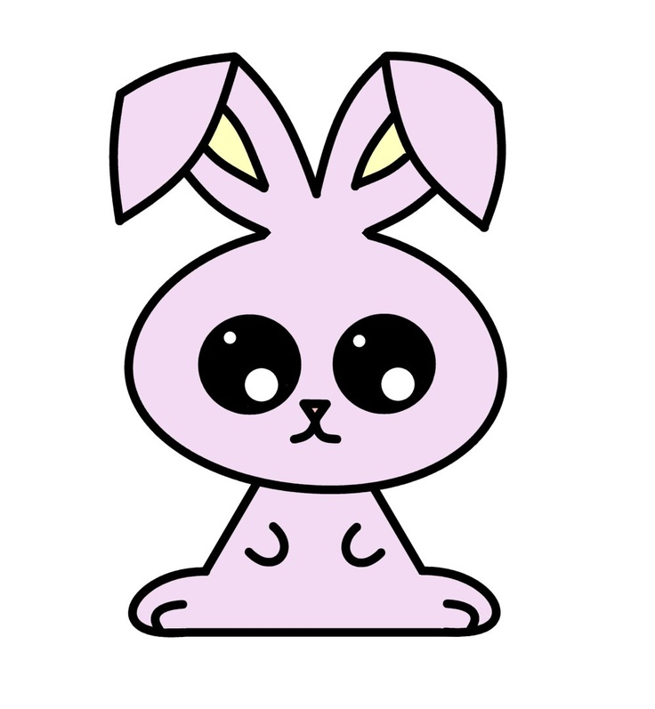
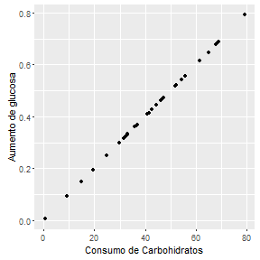
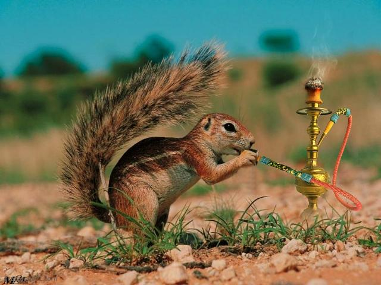
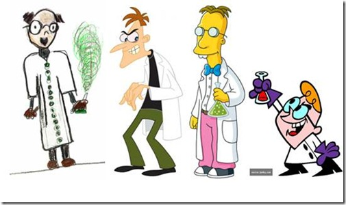
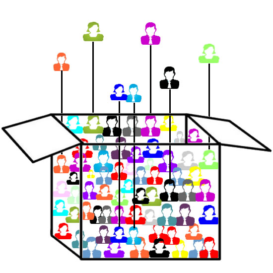
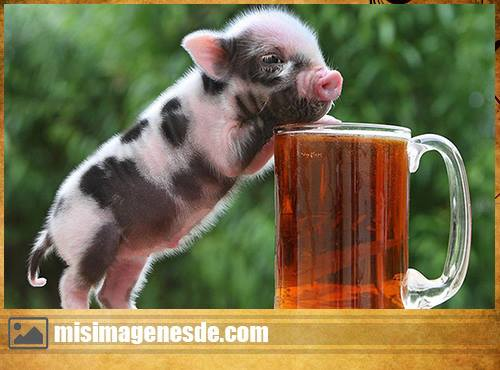

El Método Científico
Carlos Iván Espinosa
Objetivo del capítulo
El estudiante tendrá la capacidad para proponer un diseño experimental para un trabajo de investigación y conocerá a que nos referimos con:
1.1 El método científico
Las bases sobre las que soportamos la ciencia
.
.
.
1.2 Planeación de la investigación
¿Cuáles son los factores que debo tomar encuenta para realizar una investigación?
.
.
.
1.3 Tratamientos y Variables
¿Por qué es necesario definirlas?
.
.
.
1.4 Hipótesis
¿Qué es una hipótesis y por qué es necesario definirla?
.
.
.
1.5 Control Local, Replicas y Aleatorización
Tres conceptos clave para diseñar experimentos
.
.
.
1.1 El método científico
Antes de empezar necesitamos comprender algunos temas filosóficos de la investigación.

realmente no es tan doloroso
El método inductivo vs deductivo
Deductivo
Inductivo
Un número suficiente de observaciones confirmatorias y no contradictorias nos permite concluir que una teoría o ley es cierta (Gower 1997)
Es el proceso de derivar explicaciones o predicciones a partir de leyes o teorías Karl Popper (1968, 1969)
El método deductivo y generación de teorias
Si Juan tiene fiebre y tiene infección,
María tiene fiebre y tiene infección,
Pedro tiene fiebre y tienen infección
.... Entonces ...
El método inductivo y falsear la hipótesis
Conocido como enfoque hipotético-deductivo
El principio de falsacionismo, las hipotesis son ...
ya que probarlas es imposible.
Una hipótesis es falsable si existe una observación incompatible con ella.
El método inductivo ejemplo
Sabemos que las infecciones producen fiebre pero ...

Hacemos un seguimiento de pacientes con infección por hongos y vemos si presentan fiebre
La hipótesis es; los pacientes con infección por hongos presentan fiebre.
La conclusión: no todas las infecciones producen fiebre
Descripción de patrones y generación de modelos
Una parte crucial del proceso científico es la descripción de patrones a partir de observaciones (Manly 1992)
Modelos

Los modelos empíricos son descripciones matemáticas de las relaciones resultantes de los procesos más que los propios procesos.
.
Se utilizan para describir una relación entre las variables de respuesta y de predicción.
Un ejemplo de modelo
La concentración de glucosa en la sangre se encuentra directamente relacionada con el consumo de carbohidratos de la persona. Lo que se sabe es que por cada gramo de carbohidrátos consumido, la glucosa se eleva en 0.01mgr.
library(ggplot2)
con<- rnorm(30,45,15)#consumo de carbohidratos
glu<- (con*0.01)#Aumento de glucosa
qplot(con, glu, xlab = "Consumo de Carbohidratos",
ylab = "Aumento de glucosa" )

1.2 Planeación de la investigación
Imaginemos que un investigador propone la siguiente hipótesis
La sustitución de ratas por ratones como animal de prueba para evaluar dieta es más eficiente en término de costo y tiempo
Parece una pregunta relevante pero hay varias cosas que necesita decidir...
¿cuantos animales utilizar?...
¿cuantas veces realizar el experimento?...
¿Cuanta proteína se les ha de dar a los animales?...
y otras cuantas....
¿Qué hacer?
Documentar lo que se va hacer
Unas preguntas sencillas
Es importante que todo lo que hagamos este documentado y escrito
Los objetivos y principalmente la metodología debe estar escrita y se debe actualizar cada vez que sea posible
¿Cuál es mi objetivo?
¿Qué quiero saber?
¿Cómo voy a realizar esta tarea?
¿Por que hago esta tarea?
Trabajemos un poco
Se realizarán grupos y se:
...generará una pregunta...
...definirá la hipótesis ...
... se aclarará lo que quiero saber con este procedimiento...
1.3 Tratamientos y Variables
Datos, observaciones y variables
Para un investigador, los datos consisten en una colección de observaciones. Las observaciones a su vez son usualmente unidades de muestreo. En cada unidad de muestreo se obtienen variables.
Variables aleatorias
Es simplemente una variable cuyos valores no se conocen con certeza antes de tomar una muestra
Variables discretas
Variables continuas
Son aquellas variables que pueden unicamente tener valores enteros. Ejemplo??
Son aquellas variables que pueden tener valores continuos. Ejemplo??
Experimentos algunos conceptos
El experimento consiste en un protocolo para evaluar las implicaciones de observaciones generadas bajo circunstancias definidas
El experimento comparativo
, implica que se establezca
más de un conjunto de circunstancias en el experimento. Las respuestas observadas pueden y deben ser comparadas entre las diferentes circunstancias.
.
Los tratamientos
son el conjunto de circunstancias creados para el experimento, en respuesta a la hipótesis de investigación y son el centro de la misma.
.
La unidad experimental
es la entidad física o el sujeto expuesto al tratamiento y que es independientemente de otras unidades.
a trabajar otra vez ....

Recuerdan la hipótesis que hicimos....
bien ahora a completar el trabajo...
...definir las variables ....
... estamos haciendo un experimento comparativo?
....cuales son los tratamientos ....
... cual es la unidad experimental ....
1.4 La hipótesis
A partir de nuestro modelo o de la teoría podemos hacer una predicción o predicciones; estas predicciones se llaman hipótesis de investigación.
Si un determinado modelo es correcto, podemos predecir observaciones específicas en un nuevo conjunto de circunstancias. Esto es lo que Peters (1991) denomina la fase Popperiana del método científico, donde utilizamos pruebas críticas o formales para evaluar los modelos mediante la falsificación de hipótesis.
Bueno que es esto de falsear las hipótesis

Bueno que es esto de falsear las hipótesis
El problema de la inducción nace del hecho de que no se puede afirmar algo universal a partir de los datos particulares que ofrece la experiencia.

Cuantos cuervos negros debo encontrar para asegurar que los cuervos son negros
Si encuentro un solo cuervo blanco puedo falsear la hipótesis que todos los cuervos son negros
Hipótesis falseables
El avance en la ciencia está en falsar sucesivas teorías para así, sabiendo lo que no es, poder acercarse cada vez más a lo que es.

Para que una hipótesis sea falseable esta debe ser lo más precisa posible
Ej. La mal nutrición puede causar obesidad
¿Podemos hacerla mas precisa?
A falsear nuestras hipotesis

Revisemos lo trabajado y mejorar las hipótesis para que sean falseables
La hipótesis y el diseño de experimentos
Las hipótesis establecen un conjunto de circustancias sobre las cuales queremos probar algo, o mejor dicho falsear algo.
De esta manera las hipótesis definen en primera medida los experimentos a desarrollarse.

Las ardillas utilizan plantas para generar un estado de placer
¿Qué implicaciones sobre el diseño tiene esta hipótesis?
La hipótesis y los tratamientos
El objetivo de los tratamientos puede ser para "escoger al ganador" o para aclarar los mecanismos básicos asociados con los tratamientos.
¿Qué significa esto?
La hipótesis y los tratamientos
Los tratamientos de control son un punto de referencia
Un control al que no se da tratamiento revelará las condiciones en las que se efectuó el experimento.
Por ejemplo, los fertilizantes con nitrógeno suelen ser efectivos, pero no producirán respuestas en campos con alta fertilidad. Un control de fertilizante sin nitrógeno señalará las condiciones básicas de fertilidad del experimento
¿Cuál sería un control, si estoy probando un medicamento? ¿Por qué?
La hipótesis y los tratamientos
El diseño de tratamientos con múltiples factores amplía las inferencias
En el artículo "The Arrangement of Field Experiments", Fisher (1926) observó que el proverbio más repetido respecto a los experimentos de campo era el que decía: Debemos hacer algunas preguntas a la naturaleza, y de preferencia, una a la vez.
Muchas veces es mejor tener más de un factor involucrado, realizar lo que se conocen como diseños factoriales.
Piensen en la misma pregunta de antes sobre la efectividad de un medicamento y dígame como podríamos hacer un diseño factorial.
A seguir trabajando
Defina los tratamientos u observaciones a realizar con el fin de testar la hipótesis
1.6 Control local de errores experimentales
Los principales objetivos de la mayoría de los experimentos son las comparaciones claras y exactas entre tratamientos a través de un conjunto apropiado de condiciones.

Es correcta esta comparación. Existen condiciones similares para realizar las comparaciones.
El tener un control experimental asegura reducir la varianza del error experimental
El Control Local

Un investigador tiene el control sobre:
1. La técnica
2. Selección de unidades muestreales
3. Uniformidad en tratamientos
4. Selección de diseño experimental
5. Medición de covariables
1. La técnica

Las técnicas pobres pueden afectar la exactitud de las observaciones y sesgar los resultados.
La variación introducida en las observaciones por las técnicas pobres, no necesariamente es aleatoria y por lo tanto, no está sujeta a las mismas leyes de probabilidad que se asocian con la inferencia estadística.
2. Selección de unidades experimentales uniformes
Las unidades experimentales heterogéneas producen valores grandes en la varianza del error experimental. La comparación precisa entre los tratamientos requiere la selección de unidades experimentales uniformes para reducir el error experimental.
Una selección demasiado restringida puede producir condiciones de uniformidad artificiales.
Las unidades deberían representar una variedad suficiente de condiciones, sin que aumente innecesariamente la heterogeneidad de las unidades experimentales (Kuehl 2000)
Y que significa esto?
3. La segregación en bloques (bloquización)

Los bloques permiten por un lado reducir el error experimental al poner bajo condiciones similares los tratamientos (en un mismo bloque) pero mantener la heterogeneidad natural, al comparar entre bloques
4. Selección del Diseño experimental

El diseño experimental nos permite asegurar que los factores que pueden intervenir en los resultados y que no los estoy evaluando afecten por igual a todo el experimento.
5. Covariadas para el control estadístico de la variación

Las covariadas son aquellas variables que podrían afectar la respuesta observable. Cuando esto sucede es mejor controlar la covariada para incluir en el modelo
Finalmente no hay que trabajar más
Los engañe, seguimos trabajando ahora analicen como generarían mecanismos de control local para el estudio planteado.
1.7 Población y muestras
Los investigadores por lo general desean hacer inferencias (conclusiones) sobre una población, la cual se define como el conjunto de todas las posibles observaciones de interés (Quinn y Keough 2002)
Población estadística
Población natural o biológica
Población y muestras
La colección de observaciones que tomamos de la población se llama
muestray el número de observaciones en la muestra se conoce como tamaño de la muestra (por lo general dado el símbolo n).

¿Que características debe tener esta muestra?
Todas las observaciones deberían tener la misma probabilidad de ser colectadas
El muestreo no debería generar sesgos en la muestra.
1.8 Replicas
La réplica implica una repetición independiente del experimento básico. Dicho de manera más específica, cada tratamiento se aplica de manera independiente a dos o más unidades experimentales.
Demuestra que se pueden reproducir los resultados.
Proporciona cierto grado de seguridad de resultados.
Proporciona las medias para estimar la varianza del error experimental.
Proporciona la posibilidad de aumentar la precisión en la estimación de las medias de los tratamientos.
Replicar

La unidad de observación puede no ser equivalente a la unidad experimental.

Se quiere evaluar la efectividad de un nuevo alimento. Seis animales para cada tipo.
TRANSITION STYLES
You can select from different transitions, like:
Cube - Page - Concave - Zoom - Linear - Fade - None - Default
Themes
Reveal.js comes with a few themes built in:
Sky - Beige - Simple - Serif - Night - Default - Solarized - Moon
* Theme demos are loaded after the presentation which leads to flicker. In production you should load your theme in the <head> using a <link>.
Sobre mí
Estudie Biología en la Universidad del Azuay
Mis estudios de posgrado los curse en la Politécnica de Madrid donde obtuve mi título de PhD.
Trabajo en ecología de comunidades, bioestadística y metodología de la investigación.
Mi familia

María Sol
Ella estudia en el Amauta y le gusta el basquet, es una muy buena deportista
Le encanta la cocina dice que de grande ella será una Chef

Juan Cristobal
El estudia en el Amauta y le gusta el basquet
Es cinturon rojo en taekwondo
Le encanta la naturaleza y dice que quiere ser científico posiblemente biólogo

María Dolores
Ella es bióloga pero trabaja en temas administrativos
Le encanta el medio ambiente y sobre todo el mar
Esta estudiando una maestría